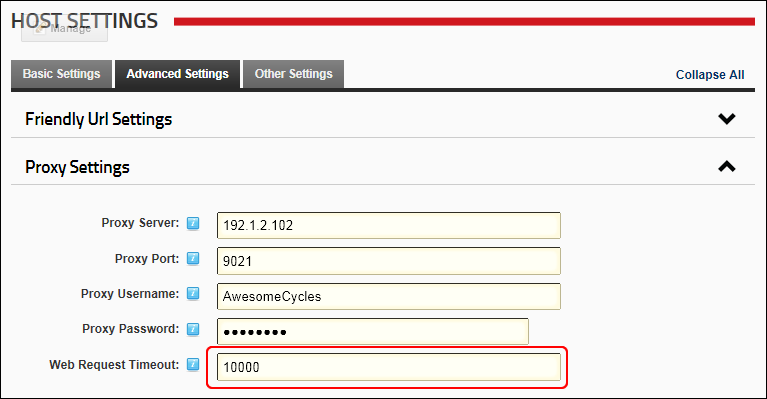

How to set the length of time a web request will persist before it times out. This setting applies to all sites. If this time is exceeded, the web browser requesting the page displays an error message stating that the web page being requested is unavailable. Note: This value corresponds to the timeout value at http://msdn.microsoft.com/en-us/library/system.net.httpwebrequest.timeout.aspx, therefore if it is less than the time taken for an external request it will fail.
